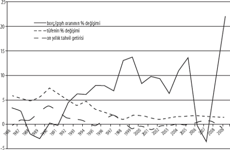
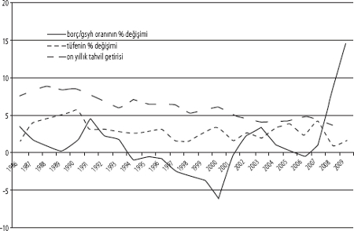
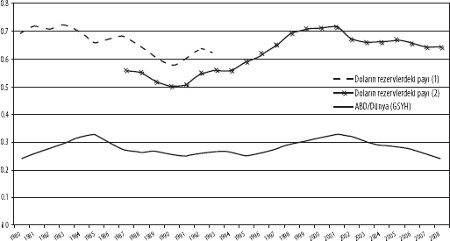

Kaynaklar: Dünya Ekonomik Görünüm Raporu (IMF) ve Alman Merkez Bankası.
Karl Beitel
Subprime fiyaskosunun geride bıraktığı yıkıntılar, krizin yönetimi ve sınırlandırılmasında devletin rolünü bir kez daha ön plana çıkardı. Bu mücadele sonunda kazanılacak veya kaybedilecek şeyler, hem sermaye hem de ilerici toplumsal hareketler bakımından çok büyük önem taşıyor. Neoliberalizmin gayretkeş savunucular bile, yaşadığımız ekonomik gerilemenin en önemli nedeninin, Wall Street'in yirmi yıllık bir finansal serbestleşme sonunda doruk noktasına çıkmış spekülatif aşırılıkları olduğunu kabul ediyorlar. Şimdiyse, Amerikan ticaret ve finans âleminin öncü sektörleri başka bir sorunla karşı karşıya: Kriz sonucunda, özel yatırımların getiri oranlarını yukarıda tutmak için kamu harcamalarına bağımlı hale gelinmiş olması, neoliberal projenin ideolojik meşruiyetini tehdit ediyor. Katılan seslerin her geçen gün arttığı bir koro, kamu açıklarını artırmanın, ABD'nin uzun vadedeki büyüme potansiyeli üzerinde yol açacağı sözde zararlı etkilerden, ayrıca doların uluslararası statüsünün maruz kaldığı tehditten söz edip duruyor. Obama yönetimini savunanlar da içinde olmak üzere, liberalleşme taraftarlarının, devam eden devlet müdahalelerinin ölçeği ve içeriği hakkındaki anlamlı tartışmaları sınırlandırmaya girişmiş olması hiç şaşırtıcı değil.
Dünyada solun karşısına çıkan görevler arasında, Amerikan solunun üstlenmesi gerekenler özellikle acildir ve ürkütücü boyuttadır. Başarısız olduğu iddia edilen devlete yönelik saldırıların, neoliberalizmin ideolojik inşasında merkezî yer tuttuğunu düşünürsek, alternatiflerin tartışılmasına zemin oluşturmanın ilk adımı, kamu sektörünün itibarsızlaştırılması dalgasına karşı durmaktır. Bu kapsamda, aciliyet bakımından ilk sırayı, on milyonlarca işsiz emekçinin yaşam standardının ve iş beklentilerinin savunulması alıyor. Bunun için, kamu açıklarının sözde enflasyonu azdırıcı etkilerine dair iddialara, ayrıca borçla finanse edilen kamu açıklarının özel yatırımlara hareket alanı bırakmayacağı safsatalarına karşılık verilmelidir. Bunun yapılması da, kamu açıkları ile doların uluslararası para birimi olma durumu arasındaki ilişkiye değinen savların gerçekte ne anlama geldiğinin açıklığa kavuşturulmasını gerektiriyor. Kamu açıklarının, para arzında enflasyona yol açacak bir artış yaratması zorunlu değildir. Aynı şekilde, açıkların özel sektör yatırımlarına kesinkes alan bırakmayacağı da söylenemez. Açıklara dair tartışmada aslında konu edilen şey, güçlü özel çıkarlara ve özellikle de küresel finans devrelerine yatırılmış sermayeye hizmet edecek bir siyasi-ekonomik düzenlemeler dizisinin savunulması ve sürekli kılınmasına yönelik çabalardır. İlerleyen sayfalarda göreceğimiz üzere, bütçe açıkları gerçekten de kapitalistler açısından bir sorun teşkil etmektedir. Özellikle şiddetli kriz dönemlerinde, yatırım ve kâr oranlarındaki baş aşağı gidişi dengelemek üzere açıklara ihtiyaç duyulur. Ama aynı zamanda, devlet harcamalarının halka doğrudan fayda sunacak şekilde kullanılması olasılığı da açıklarla beraber artacaktır. Sermaye, bu duruma kendi penceresinden baktığında, kafasındaki ekonomik çıkar algısına zıt hareket eden bir devlet hayaleti görüyor. Açıklar hakkında giderek yükselen bir sesle feryat edilirken aslında istenen şey, bugünkü ve gelecekteki Amerikan hükümetlerinin, zengin yatırımcılara ait çıkarları halkın refahından çok daha önde tutma bağlılığını açıkça sergilemesidir.
Bu konuda tahakkümcü fikir birliğine karşı koymak, kamu açıklarının durgunluk ve düşen yatırım getiri oranları için her derde deva bir ilaç olarak görülmesi anlamına gelmemektedir. Zaten, bugünkü krizin daha "verimli" bir şekilde yönetilmesine yönelik tasarılar sunmak, sosyalistler olarak bizlere düşen bir görev de değil. Devlet müdahalelerine ilişkin tartışma, piyasaların verimliliği, mevcut politika girişimleri ile hizmet edilen sınıf çıkarları ve daha ilerici, eşitlikçi seçeneklere dair olasılıklar hakkında anlamlı soruları gündeme getirecek bir siyasi alan yaratma mücadelesinden ayrı düşünülemez.
AÇIKLAR GERÇEKTEN DE ENFLASYONA YOL AÇAR MI?
Günümüzde bütçe açıklarına getirilen eleştiriler, etkisini hâlâ sürdüren parasalcı iktisadın bir türünü imdada çağırıyor. Esasına indiğimizde görürüz ki, açıklarla enflasyon arasında bağlantı kuran düşüncenin temelinde, kamu açıkları sonucunda banka rezervlerinin "sistem dışı" bir şekilde para devrelerine aktığı iddiası yatıyor. Bankalar, bu rezervleri kredi olarak kullandırma arayışına giriyorlar ve bu da ilave mevduatların yaratılması anlamına geliyor. Bu ilave mevduatları alan bankaların da daha fazla kredi kullandırmaya yönelmesiyle para arzı, dolayısıyla toplam harcamalar, üretimdeki artış hızını çok çok geride bırakacak bir noktaya çıkıyor. İddiaya bakılırsa, mal ve hizmet fiyatlarında enflasyona yol açan şey de işte bu parasal genişleme süreci.[1]
Oysa bu değerlendirme, para arzı ile fiyatlar arasındaki ilişkiyi daha en temelinden yanlış sunmaktadır. Kamu açıkları, genel olarak, likidite fazlasının ya da banka mevduatlarında aşırıya kaçan bir genişlemenin nedeni değildir. Yanı sıra, Amerikan hükümeti de mevcut bir mevduat havuzundan pay almak için rekabete girip faiz oranlarını yükselterek özel yatırımları baskılamamaktadır. Hazinenin, açıkları Merkez Bankası tarafından sunulan "krediler" yoluyla finanse ettiği doğuysa da, para piyasasına pompalanan ilave likidite, yeni devlet senetleri ihraç edilerek, ya da Merkez Bankası eliyle yürütülen "açık piyasa" ve "ters repo" operasyonlarıyla yeniden emilebilmekte ve eritilebilmektedir. Dahası, yeni devlet borç senetleriyle, devletin başlangıçta ödediği tutarlarla oluşmuş rezervler "gerisingeri ödünç alındığından", devletin yatırım arayışındaki bir mevduat toplamını kendi kasasına çektiğini söylemek doğru değildir. Tersine, devletin borç alması sonucunda, açığın başlangıçtaki finansmanı ile yaratılmış fazla likidite emilmektedir.[2]
Ortodoks görüşlerin aksine, para arzının (kullandırılan krediler yoluyla oluşturulan ödeme araçları) kendini üretimin ihtiyaçlarına ve toplam emtia üretiminin dolaşımına göre ayarladığını söylemek, bizi doğru başlangıç noktasına götürecektir. Para arzında, yani mevduatlar şeklinde tutulan satın alma gücünde meydana gelen artış ve azalışlar, hâlihazırda üretilmiş mal ve hizmetlerin fiyatlarındaki yükseliş ya da düşüşlerin temel nedeni değildir. Aynı şekilde, fiyatlar, "parayı kapmaya çalışan mallar" tarafından da belirlenmez. Tersine, fiyatlar şirketler tarafından, birim maliyetler ya da toplam maliyet üzerine kâr ilave edilerek belirlenir. Ürün fiyatlarındaki değişikliklerin yansıttığı şey, ücretler, dolaysız girdiler, genel giderler ve faiz gibi birim maliyetlerdeki değişiklikleri, ayrıca şirketin talep ettiği kâr miktarıdır.
Sermaye-hasıla oranındaki yükselme nedeniyle kâr oranı düşüyorsa, şirketler birim maliyet üzerine yaptıkları kâr ilavelerini artırarak önceki kâr marjlarını korumaya çalışacaktır.[3] Para arzındaki değişimler bu türden bir enflasyon dinamiğinin nedeni değildir. Aksine, fiyatların belirlenmesi sürecinde bankaların oynadığı rol, şirketlerin istenen kârları hayata geçirebilmesine olanak tanımak üzere, ihtiyaç duyulan alım gücünü temin etmektir. Hane halkının, devlet tarafından başlangıçta yapılan ödeme sonucunda oluşmuş vadesiz mevduatları kullanarak harcama yapabileceği doğrudur. Ancak, bu durumun fiyatlarda bir artışa yol açabilmesi için, ekonominin tam veya tama yakın istihdamla işliyor olması, ya da şirketlerin, istihdamı ve üretimi artırmak yerine kâr payını artırma kararını alarak bu ilave nominal talebi emmesi şarttır. Dolayısıyla, doğru bir ilişki kurulacaksa, para arzındaki artışın daha yüksek fiyatlara neden olacağı söylenemez. Tersine, daha yüksek fiyatlar, daha fazla miktarda ödeme aracının dolaşımını gerektirecektir.
Bu anlamda, para arzı tamamen sermaye devresi içinde ortaya çıkmaktadır. Ödeme araçlarının toplam hacmi, kendini, üretim süreçlerine yönelik işgücü ve diğer girdilerin satın alınması, ayrıca metanın dolaşıma girmesi için kapitalistlerin sahip olduğu ihtiyaçlara göre ayarlayacak, bu süreçte kredi kullandıranların kredi arzını kısma veya sınırlandırma kararlarından da etkilenecektir. Bu temel dinamik, kamu açıklarının ulaştığı düzeyden bütünüyle bağımsızdır. Benzer şekilde, kamu açıkları, fazla likiditeyi bankalar arası piyasadan çekerek gecelik faiz oranlarını düzenleme konusunda Amerikan Merkez Bankasının sahip olduğu olanakları da baltalamaz (bkz. dipnot 2). Bu yazının ek bölümünde ABD, Japonya ve Almanya için verdiğimiz grafiklerde görüldüğü gibi, belli başlı gelişmiş kapitalist ülkelerde, onlarca yıllık bir dönem içerisinde bütçe açıklarının ulaştığı seviyeyle enflasyon veya faizlerdeki artış arasında temel bir bağıntı bulamamamızın nedeni de budur.
BÜTÇE AÇIKLARI VE YATIRIMCININ GÜVEN DUYGUSU
Kamu açıkları hakkındaki Ortodoks bir yaklaşım sergileyen yorumcular, açıklar ile yüksek enflasyon veya düşük kârlar arasında herhangi bir kanıtın yokluğunda, yukarıda değindiğimiz noktalardan birçoğunu kabul edeceklerdir. Ancak, bu kabullere karşın, hükümetlerin mali kısıtlamalara neden yönelmesi gerektiği hakkında ortaya attıkları en somut savı dile getirmekten geri durmayacaklar: Yüksek kamu açıkları, bir noktada, hükümetin politika tercihleri hakkında yatırımcıların "güven" duygusunu zedeler. Sorunu bu şekilde masaya koyduklarında, güven kaybına yol açan nedeni de önem düzeyi bakımından ikinci dereceye itmiş oluyorlar. Güven kaybının tetiğini çeken şey enflasyon korkusu, özel yatırımlara alan kalmayacağı düşüncesi, uzun vadede vergi artışlarının geleceği kaygısı (ki genellikle başlıca kaygı konusudur), ya da ülke borçlarının GSYH içerisindeki oranının kabul edilebilir sınırı aşmasıyla bir güven krizinin patlak vereceği algısı olabilir. Bu noktaya gelindiğinde, o bilinen olaylar dizisi patlak verecek, güvenin sarsılmasıyla sermaye kaçışı başlayacak, yatırımcılar ilgili devletin para birimi cinsinden düzenlenmiş tahvilleri ve diğer yatırımları terk edeceklerdir. Hem tahvil fiyatları, hem de paranın değeri baş aşağı çakılacaktır. Bu ise, uzun vadeli faiz oranlarını yükseltecek ve döviz kurundaki değer kaybı üzerinden de ithal mal ve hizmetlerin fiyatını artıracaktır.[4] Yüksek faiz oranları ve artan enflasyon, güveni daha da zedeleyip, yatırımları iyiden iyiye azaltacaktır. Böylece istihdam ve üretimde de daralma meydana gelecek, sermaye kaçışı hızlanacak, daha da yüksek enflasyon oranları görülecektir. Sonunda, para birimini korumak ve yatırımları tekrar çekmek için, hükümet faiz oranlarını yükseltmek zorunda kalacaktır. Yatırımcılar, hükümetin "sağlam finans" ilkelerine yeterince bağlı kalacağına (yani mali kemer sıkma politikaları uygulayacağına, sosyal harcamalar ve ücretleri sınırlandıracağına, vergileri azaltacağına) kanaat getirdiğinde, sermaye geri dönecek ve enflasyon yatışacaktır. İş dünyasında güvenin yeniden tesis edilmesiyle, daha yüksek bir yatırım hızıyla restorasyonun başlaması yönünde yeni bir teşvik ortaya çıkacaktır.
Şurası açık ki, bütçe açıklarıyla ilgili kaygıların ağırlıklı bölümü, borçlu hükümet tarafından uygulanacak politikalara alacaklıların duyduğu güvenle bağlantılı. Ancak, sorun bu şekilde ele alındığında da bir soru kendini gösteriyor: Neye duyulan güven? Açıkların yüksek enflasyonu da, özel yatırımlara alan kalmamasını da doğrudan tetiklemediğini önceki satırlarda gördük. ABD'de kamu açıklarının artması yüzünden devletin borcunu ödeyemez hale geleceğinden korkmak için de neden yok. Zira ABD kendi para birimiyle borçlanabildiği için, vadesi gelen borçlarını salt dolar basarak ödeyebilir. Senyoraj hakkının doğası da bunu söylüyor: Egemen bir ülke, kendi para birimiyle borçlanmış olması kaydıyla, her türlü ödeme yükümlülüğünü daha fazla para basarak karşılayabilir. Yatırımcılar, yabancı merkez bankaları da dâhil olmak üzere, Amerikan hükümetinin borçlarını satın aldıklarında, gerek yabancı gerek yerli kapitalistler ve merkez bankaları, aslında Amerikan Merkez Bankası (yani Amerikan hükümetinin bankacılık kolu) üzerindeki haklarını, Hazine Bakanlığı (merkezî hükümetin harcama ve vergilendirme kolu) üzerinde sahip olunan bir hakla değiştirmektedirler. Tahvillerin vadesi geldiğinde, yatırımcılar daima dolar cinsinden ödeme talep edebilmekte ve böylece borcun biçimini, Amerikan merkezî hükümetinin borcu olmaktan çıkartıp, gerisingeri uluslararası piyasada ödeme aracı olarak işlev gören dolar rezervlerine çevirebilmekteler. Ancak, bu fonların (rezervler) genellikle yeniden yatırıma yöneltileceği düşünüldüğünden, alacaklar çoğu zaman vadesi gelen borçları, o gün için ikincil piyasada geçerli olan faiz oranıyla yenilemeyi kabul etmektedirler.
Tahvil sahipleri, nihai ödeme tarihini bu şekilde erteleyerek, aslında ABD'de açık uçlu bir kredi temin etmekteler ve kredi, her türlü pratik amaç çerçevesinde, "sonsuzmuş" gibi düşünülebilir. Varlıklı yatırımcılar ve yabancı merkez bankaları, ABD'ye açık uçlu bir kredi temin ederken, ABD'nin kendi sınıf çıkarlarına zararlı davranışlar sergileyerek bu güveni suistimal etmeyeceği konusunda kendilerini güvende hissetmek istiyorlar. Seçkinlerin bütçe açıklarına ilişkin gerçek kaygısı da işte bu noktada yatıyor. Sermaye, bütçe açıklarına bağımlı olduğu gibi, bu bağımlılığın tehdidi altındadır bir yandan da. Merkezî hükümetlerin senyoraj imtiyazları, uluslararası piyasalardan kendi para birimleriyle borç almalarına olanak tanır. Bir tarafta, büyümenin ve birikimin devam ettirilmesi için kamu harcamaları zaruridir ve ayrıca bu harcamalar, tipik olarak finansal araçlara yatırılan ya da hane halkına temettü şeklinde dağıtılan şirket kârlarının birincin kaynağı konumundadır. Ancak aynı zamanda, devletlerin ilerici, hatta potansiyel olarak sosyalist programlar ya da girişimlere yönelme serbestliğini de açığa vurmasıyla, sermaye için bir tehdit durumundadır.
Amerikan hükümetinin, örneğin, mevcut harcama taahhütlerine ek olarak kentsel yatırım girişimleri için 1 trilyon $ daha tahsis etme yeterliği üzerinde teknik bir kısıt bulunmamaktadır. Hükümet, çevresel açıdan daha sürdürülebilir bir kentsel gelişim biçimi yaratmak üzere, kamunun öncülüğünde bir altyapı yatırımı programı benimseyerek tam istihdam politikası oluşturabilir. Dahası, merkezî hükümetin elindeki vergilerin düzeyini ve dağıtımını belirleme serbestliği de, açıkları kapatmak için varlıklı hanelere yönelik yüksek vergiler koyma yoluna her an gidilebileceği anlamına gelmektedir. Şurası çok açık ki, kamu harcamalarının ölçeğinin ve içeriğinin, sağlık hizmetleri ve kamu istihdamı gibi sosyal programları genişletecek yönde yeniden belirlenmesi ve devlet öncülüğünde, hükümetin denetiminde bir çevreci altyapı yatırım hamlesinin başlatılması, kapitalistlerin son otuz yılda kazandığı siyasi ve ekonomik mevzilere önemli bir tehdit yöneltecektir. Kamu harcamalarının, emekçilere dönük sosyal destekleri genişletecek şekilde artırılması yönündeki her türlü olasılık, işte bu yüzden sert bir direnişle karşılaşacaktır.[5]
Dolayısıyla, kamu açıklarıyla "güven" arasındaki ilişki üzerinde dönen tartışma, ABD'de yumuşak başlı ve disiplin altına alınmış bir işgücünün, istikrarlı fiyatların, finansal yatırımlara cömertçe ve istikrarlı bir biçimde kazanç temin eden ortamın, yasal düzenlemeleri sümen altı etme itme tavrının ve vergi sınırlamalarının sürdürülmesine yönelik talebin şifresi gibi algılanmalı. Amerikan finans sektörünün de içinde bulunduğu küresel yatırımcılar için güvenin karşılığı, kapitalist sınıf kaymak tabakasının son otuz yılda elde ettiği önemli politika kazanımlarının (finansın liberalleştirilmesi ve mevzuatın gevşetilmesi, vergilerin azaltılması, finansal mülkiyet sahiplerinin birleşmeler ve kaldıraçlı satın almalar yoluyla şirket yönetimleri üzerinde uyguladığı erkin büyütülmesi, eskiden koruma altından olan pazarlarda kapıların "serbest ticaret" anlaşmalarıyla ardına kadar açılması, zararların halka yayılması yönünde açık uçlu bir taahhüdün sunulması) korunması yönünde gerekli kararlılığın sergilenmesidir. Benzer biçimde, Obama yönetiminin sosyal harcamalarda meydana gelecek herhangi bir artışın ilave yük getirmeyeceği yönündeki taahhütlerinde dile getirdiği şey, ABD'nin egemen varlıklı sınıfın çıkarlarının en mümtaz savunucusu olarak hareket edeceğini söyleyen, ideolojik şifrelere sahip bir sadakat yeminidir. Yükselen fiyatlara, özel yatırımlara alan kalmamasına, dağıtılan kârların ve kapitalist ailelerin sermaye kazançları üzerinde uygulanan yüksek vergilerin "istihdamı yok edici" etkisine, Wall Street'in "aşırı" düzenlemelere tabi tutulmasının uzun vadeli refah üzerinde yaratacağı tehdide dair kaygıların tamamı, bu imtiyazlı seçkinlerin savunulması için seferber edilecektir.
Köküne indiğimizde, "kabul edilebilir" kamu açığı miktarına dair tartışmada söz konusu olan şey, Amerikan siyaset sınıfının, egemen mülk sahiplerine ait çıkarların mümtaz savunucusu olma yönündeki kararlılığıdır. Bu savunma sadece ABD'deki çıkarlarla da ilgili değil. Amerikan devleti, Japonya ve Batı Avrupa merkezli kapitalistler karşısında, kapitalizmin "küresel başkomiseri" gibi davranmaya devam ediyor.[6] Kuşkusuz, bu da doğrudan yabancı yatırımların güvenliğini garanti altına alma yolunda Amerikan askerî gücünün kullanılması kararlılığını gerektiriyor. Bu askerî gücün finansmanı nedeniyle kamu açıkları üzerinde ortaya çıkan etkinin ciddi kısıntı taleplerine konu edildiğini hemen hiç duymayız. Reagan döneminde alınan derslerden biriydi bu: ABD, kapitalist sınıfın en ileri boyutta uluslararası hale gelmiş kesimlerine ait olan ve tüm sistemi ilgilendiren çıkarları güvence altına alma yolunda katkı sağlayacaksa, bütçe açıklarını hiç düşünmeden artırabilir. ABD işte bu nedenle, özellikle de bir Demokrat yönetim altındayken, şirketlerin ve yatırımcıların piyasalara ve kâra ilişkin haklarını, halkın toplumsal haklarından daha üstte tutma kararlılığının sürdüğünü göstermek zorunda. Yabancı varlıklara sahip olma ve bunlar üzerinde tasarrufta bulunma, elde edilen kârları hiçbir sınır olmadan kendi ülkesine kaçırma hakkını veren çok taraflı "serbest ticaret" anlaşmaları ilkesini savunmaya mecburdur. Günümüz şartlarında en can alıcı olanı ise, normalden yüksek değer biçilmiş, aşırı kaldıraç kullanımına tabi tutulmuş küresel finans devrelerine yatırılan sermayenin büyük bir devalüasyona maruz kalmasını önlemek amacıyla, ucuz krediye erişim imkânı ile fiyat kontrolleri arasında denge kurma kararlılığına ve kabiliyetine sahip olduğunu göstermelidir.
YATIRIMCILAR AMERİKAN HÜKÜMETİNİ
CEZALANDIRABİLİRLER Mİ?
ABD'nin, yatırımcılar sınıfının gönlünü almak için sosyal harcamaları sınırlandırması gerektiği iddiasının en önemli halkasını, yeterli rekabet gücüne sahip bir ticari ortam yaratamayan hükümetlerin, sermaye kaçışı tehdidiyle uğraşmak zorunda kalacağı savı oluşturuyor. Küçük devletlerde, özellikle de uluslararası piyasada kendi para biriminde borçlanamayan ülkelerde, politikaların finans tarafından veto edilmesi gibi bir durumla karşılaştığı doğrudur. Uluslararası ödeme aracı olarak kullanılan para birimlerini basanlar başta gelmek üzere, öne çıkan kapitalist ülkeler söz konusu olduğunda ise, işler bu kadar sıkıntılı değil. Bugün, doların uluslararası rezerv para durumunu sürdürme yeterliğini sergileyip sergileyemeyeceği konusunda ciddi anlaşmazlıklar var.[7] Doların durumu uzun vadede kesinlikle tartışmalı olsa da, şu an için ciddi bir rakibin meydanda görülmediği, dolayısıyla doların uluslararası rezerv para konumunu 2010'larda da sürdüreceği açıktır. Bunun anlamı şu ki, küresel yatırımcıların, salt özel piyasa devrelerini kullanarak, yani sadece Amerikan hükümetinin borcunu alıp satma kararlarını yönlendirerek politika tercihleri üzerinde sahip olabilecekleri veto gücü sınırlıdır. Bu nedenle, liberalleşmiş finansın dayatmaları ile uluslararası ödeme aracı ve rezerv servet stoku olarak kullanılan paraları basan hükümetlerin elindeki politika tercihleri arasındaki ilişkiyi kavrama yolunda ayrıntılara inmeliyiz.
Finansal serbestleşme hikâyesinin hasıraltına itmeye çalıştığı şey şu ki, hareket halindeki finansın gücü piyasa entegrasyonu sayesinde kesin biçimde pekişmiş olmakla birlikte, hâlâ sermayeyi sınırlandıran iki etmen var: Uluslararası ticaret ve finans devrelerinin akışkanlığını sağlayacak bir uluslararası ödeme aracına yönelik ihtiyaç ve son derece likit, getiri sağlayan, "güvenli liman" rezerv para işlevi görev bir varlığa duyulan gereksinim. Bu ihtiyaçlar üç şekilde çözüme kavuşturulabilir. Birinci yol, uluslararası para sistemini emtia temeli üzerine kurmak, altını bir değer standardı ve nihai uluslararası ödeme aracı haline getirmektir (altının uluslararası ödemelerde nadiren bu şekilde kullanıldığını belirtelim). İkinci yol olarak, bir uluslararası ödeme aracı basıp yönetecek bir dünya merkez bankası inşa edilebilir. Bu işlev, ülkelere bir tür çekme hakkı [drawing right] tanıyacak, çeşitli şart ve koşullara tabi bir takas birliği üzerinden düzenlenir.
Bugün uygulanmakta olan üçüncü seçenek ise, uluslararası sistemin değerli, hilesiz bir "ülke parası" temeli üzerine inşa edilmesidir. Dünyaya egemen devletin bastığı para, genel hesap birimi (aracı para) [vehicle currency], ödeme aracı ve rezerv değer olarak kullanılır. Dolar, günümüzün rakipsiz uluslararası ödeme aracı olarak öne çıksa da, bu düzenleme kendi içinde sorunlar taşıyor. Bir kere, herhangi bir emtia karşısında çevrilebilir [convertible] olmadığından, tüm diğer para birimlerine ait kurların ölçülmesinde doların mutlak standart işlevi görmesi mümkün değildir. Ayrıca, ticaret açıklarının doğal sonucu olarak, ABD'nin geri kalan dünya karşısındaki toplam borcu sürekli arttığından, Amerika'da mukim kişilerin (hükümetler, şirketler ve hane halkı) dolarla yaptığı ödemeler, nihai uluslararası ödeme anlamını taşımamaktadır. Buradaki sorun, ABD'nin muazzam ölçekli ve aynı zamanda giderek artan bir "açık senedin" karşılığını ödeme aczine düşme olasılığı değildir. Altına çevrilebilirliğin olmadığı bir ortamda piyasadaki muazzam dolar yükü, doların uluslararası piyasalardaki alım gücünün devalüasyona uğraması kâbuslarının görülmesine yol açmaktadır.[8] Bu durumda şu soru kendini gösteriyor: Birincisi, yabancı merkez bankaları ve küresel bankacılık kuruluşları neden dolar kabul etmeyi ve elde tutmayı sürdürüyor ve ikincisi, Amerika hükümetinin borçlarını satın alma ve elde tutma isteğine ne darbe vurabilir?
Dolara yönelik dış talep, "neo-fermancı" (devlet temelli) para yaklaşımının yurtiçindeki dolar talebine getirdiği türden açıklamalarla kavranamaz: Tablo, vergi çıkarma ve halkın merkezî hükümete bu vergileri ödeyeceği para birimini belirleme konusunda devletin sahip olduğu yetkileriyle açıklanacak gibi değildir.[9] Zira bu yetkiler, merkezî hükümetin egemenlik alanı içindedir. Aynı şekilde, Amerikan Merkez Bankası da yabancı bankalara rezerv koşulları dayatma yetkisine sahip değdir. Dolayısıyla, küresel piyasalarda bir uluslararası ödeme aracına duyulan ihtiyaç ile paranın hâlâ asıl olarak ulusal sınırlar çerçevesinde basılıp yönetildiği gerçeği arasında bir çelişki kendini göstermektedir. Soru değişmemiştir: Dünyanın en fazla öne çıkan rezerv varlığı neden yen veya avro değil de dolardır?
DOLARIN GÜCÜ
Güçlü sistem aktörleri, bir ödeme aracı ve uluslararası rezerv olarak dolara yönelik uluslararası talebi alttan desteklemeyi şimdilik sürdürüyor. Avrupa ve Doğu Asya'nın büyük kesiminde, birikimin ayrılmaz bir biçimde Amerikan pazarına bağlı kalmaya devam ettiğini açıkça görüyoruz. Benzer şekilde, uluslararası petrol ticaretindeki faturaların aracı para birimi de dolardır. Bu yüzden, yabancı üreticiler ve merkez bankaları, dolar kabul etme ve biriktirme dışında pek az şansa sahip. Yabancı merkez bankaları, doları gerisingeri Amerikan sermaye hesabına gönderdiğinde, bu hareketin uzun vadede Amerikan faiz oranlarını düşürme eğilimi taşıdığını, kendi mallarına yönelik Amerikan talebini desteklediğini ve ihracatçılarının elindeki kâr imkânlarına destek olduğunu bilerek adım atıyor. Rezervde dolar tutma istekliliği, her iki tarafa da fayda sağlayan, sembiyotik bir anlaşmanın bedelidir. Bu anlaşma sayesinde yabancı ihracatçılar, dünyanın bu en büyük pazarına girme olanağını elde ederken, ABD de uluslararası piyasada satılan Hazine tahvillerinin yabancılar tarafından satın alınmaya devam edeceği konusunda güvenceye kavuşmaktadır.
Doların konumu, uluslararası ticaret ve yatırımın önemli bir kısmını denetim altında tutmayı sürdüren Amerikan çokuluslu şirketlerinin korkunç gücünden de besleniyor. Ellen Frank'ın karşı konulması güç bir biçimde belirttiği gibi, hem dolar cinsinden ifade edilen varlıkların Amerikan çokuluslu şirketlerinin servetlerinde büyük pay tutması, hem de bu şirketlerin borçlanma ve ödemelerde (hissedarlara dağıtılan kâr da dâhil olmak üzere) doları tercih etmesi nedeniyle, söz konusu gücün bir dolar talebi yarattığı açıktır.[10] Doların piyasa tarafından desteklenmesi sisteminde bir o kadar önem taşıyan diğer etmen, Wall Street'in gücü ve küresel nüfuzu ile Londra merkezli avro pazarlarında Amerikan sınır ötesi bankacığının sergilediği varlıktır. Çokuluslu Amerikan bankaları, yurtiçi mevduatlarının ve varlık temellerinin, dünyanın en büyük pazarında konumlanmış olması ayrıcılığına sahip. Amerikan bankaları, ABD Hazinesi ile Merkez Bankasının bağlantı noktasında konumlanmış durumda ve bu da dünyanın en derin, en likit yurtiçi tahvil piyasasına ayrıcalıklı bir erişim imkânı sunmakta. Aynı zamanda, sınır ötesi bağlı kuruluşları aracılığıyla da Londra merkezli avro piyasalarına erişebilmekteler. Amerikan tahvil ve para piyasasının benzersiz derinliği ve likitliği, ayrıca dolar cinsinden varlıklar ve mevduatların oluşturduğu olağanüstü büyük taban, Amerikan finans sektörünün küresel erişim ve egemenliğini genişletme, pekiştirme yolunda Londra avro piyasalarının temin ettiği platform aracılığıyla daha da yukarılara kaldırılabiliyor.
Son kriz tarafından havası bir miktar söndürülmüş olmasına karşın, Wall Street hâlâ özel finans sektörünün en yeni yatırım stratejilerini belirlemeyi sürdürüyor. Amerikan yatırım bankaları bugün de uluslararası tahvil aracılık yükleniminde, birleşme ve satın alma tavsiyelerinin sunulmasında lider konumda. Amerikan kapitalist sınıfının tasarruflarını toplayıp yöneten koruma fonları ve özel sermaye şirketlerinin oynadığı rol de yine doların merkezî konumunu pekiştirir nitelikte. Bu tasarruflar, dünyanın en büyük ulusal temelli, ama küresel ölçekli finans havuzlarından birini oluşturmakta. Tüm bu etmenler, Wall Street'e ABD ile uluslararası finans piyasası arasındaki kritik bağlantı olma konumunu bahşediyor ve böylece, dünya üzerindeki en güçlü hükümetin güvencesi altında bulunan doların uluslararası rezerv para olma niteliğini de pekiştiriyor.
Şu an için tutunabilecek bir seçeneğin mevcut olmaması da doların yapısal payandalarına güç katmakta. On yıl kadar önce avro ortaya çıktığında doların karşılaştığı "tehdit" ile ilgili yapılan konuşmaların ne kadar abartılı olduğunu bugün açıkça görüyoruz.[11] Yazının ek bölümündeki Şekil II ve III'te görüleceği gibi, resmî yabancı rezervlerin bileşiminde, doların aleyhinde ve avronun lehinde herhangi bir önemli kayma yaşanmış değil. Hatta döviz kurundaki değişikliklere ayak uydurma çabasındaki yabancı merkez bankaları, avro ile kıyaslandığında dolar varlıklarını artırmakta.
Yabancı döviz rezervlerinin avroyu da içerecek şekilde çeşitlenmesi ilke olarak hâlâ gerçekleşebilirse de, Amerikan Hazinesi-Merkez Bankası "bileşimi"nin mevcut konumunun avro ve Avrupa Merkez Bankası tarafından devralınması olasılığı, çeşitli etmenler tarafından zayıflatılmakta. Bir kere, dolara yönelik tercih, Avrupa para birliğinin "parçalı egemenlik" yapısından da etkilenmektedir. İşin para boyutunda, AB pratik bakımlardan avronun hesap birimi ve ödeme aracı olarak kullanıldığı tek bir ülke gibi düşünülebilir. Gelgelelim, mali politikalar üzerindeki güç ise hâlâ, halkın yaratacağı etkilere açık durumdaki ulusal hükümetlerin egemenlik düzeyinde kullanılmakta. Sonuçta, avroyu çokuluslu bir kurum olan Avrupa Merkez Bankası'na bağlı bir parasal birlik olarak ayakta tutan ve yeniden üreten prosedürlerle, hükümetlerin kamu finansmanı üzerindeki yetkilerini ortaya çıkartan ulusal yasama alanı arasında yapısal bir ayrışma boy gösteriyor. Amerikan Hazinesi-Merkez Bankası örneğinin aksine, Avrupa Merkez Bankasının ulusal denetim altında bir hazine karşılığı bulunmuyor. Avronun hesap birimi olarak işlev gördüğü coğrafi alan üzerinde tek bir devletin egemen otoritesi uygulanmadığından, avro birleşik ve yeterince likit bir ülke borçları piyasasından mahrum kalıyor. Sonuçta, bambaşka siyasi ve toplumsal dinamiklere sahip, birbirinden son derece parçalanmış ülke borçları piyasalarından oluşan, bir yapıyı tek bir para biriminin düzenlemeye çalıştığı, anormal bir durumla karşı karşıyayız.
Avro, daha en başından beri sorunlu olan bir girişim nedeniyle belaya bulaşmış durumda: Yunanistan gibi küçük bir çevre ülkenin borcuna, Almanya ve Fransa gibi büyük, güçlü ekonomilerin borcuyla aynıymış gibi muamele ediliyor. Maastricht Anlaşması'nın şartları ve Avrupa Merkez Bankası'nın kuruluşuna temel oluşturan hükümler, üye ülkelerin kamu bütçelerini mali doğruluk ilkelerine tabi tutacak bir kurallar temelli politika çerçevesinin getirilmesi yoluyla bu çelişkiyi çözüme kavuşturma doğrultusunda belirlenmişti. 2010 Yunanistan krizinin yansımaları, Avrupa para birliğini destekleyen kurumsal düzenlemelerin altta yatan çatlaklarını ve zayıflıklarını bir bir gün yüzüne çıkardı. Önde gelen Avrupalı hükümetler, baskı altındaki ülkeler için 750 milyar €'luk bir paketin devreye sokulmasını, o da çok sert şartlar doğrultusunda nihayet kabul ettilerse de, bu aşamaya kadarki karar alma süreçleri, kriz dönemlerinde ayrıcalıklı rantiyeci-yönetici kesimlerin direncini pragmatik düzenlemelerle dengeleyecek, net bir siyasi-ekonomik liderlik merkezinin bulunmadığına dair kanıtlar ortaya koydu.
Bunun yanında, Yunanistan krizine verilen tepki, önde gelen Avrupalı hükümetler arasında devam eden gerilimleri, özellikle de Alman ve Fransız siyasi önderliklerinin siyasi yönelimlerindeki ayrılıkları açığa çıkardı. Mali ayarlamaların getirdiği maliyetin, refah harcamalarındaki kesintiler yoluyla halk sınıflarına ödetilmesi konusunda aynı kararlılığı paylaşmalarına karşın, Fransa'daki liderlik, ihtiyaç duyulan devlet teşviklerinin sunulabilmesi için yüksek bütçe açıklarının hoş görülmesi konusunda daha istekli bir tutum sergiliyor. Karşı kampı oluşturan Almanya ise, gerek tarihsel nedenlerle (hiper-enflasyonun ve daha yenilerde de, Doğu Almanya ile birleşmenin getirdiği maliyetin belleklerden silinmeyen anıları), gerekse Avrupa'nın "kurtarıcısı" olma konusundaki isteksizliği pekiştiren ülke içi siyasi güçler bileşimi yüzünden, kıtada denk bütçe ilkesine en sıkı sarılan ülke konumunda. Herhangi bir üye ülkenin kurtarılması operasyonuna Almanya'nın da dâhil edilmesi için Merkel hükümetinin koştuğu sert şartlar da bu gerçeğe işaret etmiş, krizin yönetiminde daha pragmatik bir yaklaşıma ihtiyaç duyulurken, denk bütçe ilkesine böylesine ideolojik bir bağlılık sergilemenin mantıklı olup olmadığı hakkında soruların doğmasına yol açmıştır.[12] Bu tablo, Avrupa para birliğinin uzun vadedeki kaderi hakkında iyi şeyler vaat etmeyen, kronik ve belki de giderek derinleşecek bir yönetim krizine dair olasılıkları akla getiriyor.[13]
En önemlisi, Avrupalı seçkinler, avroya duyulan güveni pekiştirme yolunda, uzun vadede geçerliliğini koruyabilecek tek yolun sosyal harcamalarda tasarrufa gidilmesi olduğu konusunda ortak bir ısrar içindeler. Bu tutum, avroya ilişkin mevzuat yapısının sahip olduğu deflasyonist, temelden emek karşıtı taraflılığın boyutları hakkında çok şey söylüyor. Avro projesinin özündeki kilit toplumsal çelişki de bu muhtemelen. Diğer taraftan, avronun bir uluslararası para birimi olarak durumu, en azından sözde halka karşı hesap vermek zorunda olan üye ülkelerin sorumluluklarını yerine getirmesine bağlı hâlâ. Krizde meydana gelecek bir derinleşme, Avrupa Birliği'nin ayakta kalacağı konusunda piyasanın güvenini kazanma amaçlı sosyal ve mali tasarruflara yönelik talepleri şiddetlendirecek. Bu politika, belli tehlikeleri de beraberinde getiriyor. İlk olarak, kemer sıkma önlemleri, AB-avro projesi payandalarının rantiye ve yönetici sınıflardan yana derin taraflılığını gün yüzüne çıkartacağından, kamu bütçelerinde daha aşikâr bir siyasileşmeye yol açabilir. Dahası, köklü bir sosyal uzlaşı ve sınıf mücadelesi tarihini yansıtan sosyal refah haklarını öylece hükümsüz kılmak kolay değil. Kapitalist mülk sahiplerinin penceresinden bakıldığında sınıf sorunu, Avrupa hükümetlerinin özel finansa tanınmış imtiyazlara karşı yumuşak davranma isteğini ve gücünü ortaya koyacak mesajların verilmesi için gerekli kemer sıkma politikalarına ve yaşam standartlarındaki düşüşe halk sınıflarının set çekmesi olasılığını ifade ediyor. Bu tip önlemlerin direnişle boşa çıkartılması, günümüzün Avrupa mevzuat yapısına yönelik uluslararası güven üzerinde de aynı düzeyde derin etkiler yaratacaktır.
Krizin Avro Bölgesi'ndeki sonuçları neler olursa olsun şurası kesin ki, avronun altta yatan zayıflığı, doların uluslararası rezerv para olma konumunu en azından şimdilik pekiştirmeye yarayacaktır. Yatırımcılar, ödeme aczine düşmeme konusunda hâlihazırda Amerikan hükümetine karşı besledikleri güvenin aynını Avrupa devletlerine karşı da ortaya koyma isteğinde değiller. Bugün uluslararası piyasada alınıp satılanlar arasında, risksiz bir varlık olmaya en yakın şey Almanya veya Fransa'nın değil, ABD'nin ülke borçlarıdır. Tüm bu nedenlerden ötürü, doların ve Amerikan hükümet borçlarının uluslararası ödeme aracı ve dünya piyasalarında akışkanlığı sağlayan şey olarak oynadığı rolü avronun ve Almanya ile Fransa'nın borçlarının devralması mümkün görünmüyor.
Çin, potansiyel olarak, ABD'nin uluslararası finans âlemindeki yerleşik egemenliği karşısında daha geçerli bir uzun vadeli tehdit olarak görülebilir. Çin'in sonunda bir süper-güç konumuna yükselip yükselemeyeceği ve ABD'nin küresel tahakkümüne kafa tutup tutamayacağı hakkında fazlasıyla tartışma yürütüldü. Ülkenin uzun vadede küresel süper-güç konumuna yükselmesine dair soruları şimdilik bir kenara koyarsak, yuanın önümüzdeki on yıl içinde dolar karşısında küresel bir alternatif olarak ortaya çıkması, önemli engellerin aşılabilmesine bağlı. Birincisi, yuanın bir uluslararası rezerv paraya dönüşmesi için, dünya genelindeki yuan arzının muazzam ölçekte artması şart. Bunun gerçekleşmesi içinse, Çin'in uzun süre ticaret açığı vermesi, ya da yuan cinsinden krediler, doğrudan yatırımlar, finansal varlık alımları yoluyla, sermaye hesabından büyük bir yuan çıkışı sağlaması gerekiyor. Ayrıca, yuanın belli başlı rezerv servet stoklarından biri olarak işlev görebilmesi için, küresel piyasada serbestçe alınıp satılabilecek, yeterli miktarda yuan cinsinden tahvil stokunun temin edileceği konusunda Çin tarafından güvence verilmesine ihtiyaç duyulabilir. Çin'in, sermaye hesabında tam ve serbest konvertibiliteye geçmesi, yabancıları istenen miktarda yuan (ve devlet tahvilleri) alma ve satma konusunda serbest bırakması gerekecektir. Son olarak, merkezî hükümetin sermaye hesabında liberalleşme doğrultusunda şaşmaz bir kararlılık sergileyeceği, ayrıca asla borcunu ödememe yoluna gitmeyeceği konusunda uluslararası yatırımcılara güvence verilmesi şart.
Bu koşulların önümüzdeki on yıllık dönemde karşılanması olası görünmüyor. Yuanın, açık piyasada serbestçe dalgalanmaya bırakılması hâlinde ulaşacağı seviyelerden daha düşük değerde tutulması, Çin'in ihracattan elde ettiği sermayeye büyük katkı sağlıyor. Ayrıca, Çin'in, sermaye hesabında tam liberalleşmeye ihtiyatla yaklaşacağını düşünmek için bolca sebebimiz var. Zira bu yönde bir adımın atılması, yuan üzerinden ihraç edilmiş borç senetlerine uygulanan uzun vadeli faiz oranları üzerindeki kontrolü ortadan kaldıracaktır. Ayrıca, yuanın bugün için bir rezerv para olmadığı düşünülürse, yabancıların yuanı bir uluslararası ödeme ortamı olarak kabul etme konusunda sergileyeceği istekliliğin sınırları vardır. Benzer şekilde, Çin Merkez Bankası ve Hazinesi, yuanın uluslararası ölçekte rezerv para olarak yönetilmesi için gerekli teknik ve kurumsal altyapıdan yoksundur. Çin bankacılık sektörü, Amerikan Hazinesi/Merkez Bankası/Wall Street'in elindeki hudutsuz küresel erişim olanağına, Amerikan tahvil piyasasının müthiş likiditesine ve derinliğine karşılık düşecek bir ülke içi araca sahip değil. Çin bankalarının, uluslararası tahvil ve hisse senedi piyasalarındaki yeni ihraçlarda aracılık yüklenimine girişme yeterlikleri sınırlıdır ve Londra merkezli avro piyasalarında anlamlı düzeyde kurumsal varlık sergileme imkânları yoktur. Ayrıca, Çin'in borçlarını daima ödeme taahhüdüne, yabancı yatırımcıların Amerikan hükümeti taahhütleri kadar güven duyması mümkün görünmemektedir. Saydığımız tüm bu nedenlerle, kısa ve orta vadede Çin'in yuanı ciddi bir uluslararası seçenek olarak ortaya sürme isteği de gücü de bulunmamaktadır.[14]
Doğu Asya para birliğinin günün birinde kurulmasına ilişkin tartışmalara da aynı şekilde ihtiyatla yaklaşılmalı. Ticaret ve yatırım alanlarında giderek derinleşen bir büyüme, bugün bölgenin tanımlayıcı özelliği haline gelmiş olsa da, Çin-Japon ilişkisindeki köklü gerilimler, yakın vadede bir para birliği olasılığını çöpe atacaktır.[15] Dahası, Çin'in uluslararası plandaki duruşunda, ikili ticaret anlaşmaları kapsamında yuanın bir aracı para ve ödeme aracı olarak kullanılmasından faydalanılmakta. Pekin, bugüne dek, bölgesel birlik yolunda ulusal kalkınma hedeflerinden ödün verme istekliliği göstermedi. Bir o kadar önem taşıyacak şekilde, para birliğinin kilit ön şartı olan piyasa altyapısını ve mevzuat desteğini bütünüyle kurmak için ihtiyaç duyulan teknik yeterliklere bugün ne Japonya ne de Çin sahip. Kısacası, Avrupa'daki para birliğinin şartlarını biçimlendirme yolunda kritik siyasi ve teknik liderlik sunmuş olan Almanya ve Almanya Merkez Bankası'nın Doğu Asya'da bir karşılığı bulunmamaktadır.[16] Ek olarak, oluşacak bir birliğin şartları üzerinde Çin'in sahip olacağı kaçınılmaz egemenlik dikkate alındığında, ASEAN (Güneydoğu Asya Uluslar Birliği) ülkelerinin de Çin ile yakın dönemde eksiksiz bir para birliğine girmekten yana tercihte bulunmaları olası görünmüyor. Chiang Mai Girişimi ve Asya Tahvil Fonu, bölge sermaye piyasalarındaki derinleşmeye katkı yapmaya devam edecek ve böylece bir para birliğinin temellerini atabilecekse de, böyle bir sonuca henüz çok var gibi.
Özel çekme haklarının (SDR) bir biçimi esas alınarak bir uluslararası para birimine geçme tasarılarının içi, şu anda bu yönde somut bir olanak bulunmadığı için, büyük ölçüde boştur. Keynesçi tipte bir "bankor" hesap birimi ve uluslararası ödeme aracının oluşturulması, büyük kapitalist ülkelerin para politikası imtiyazlarını çeşitli kısıtlamalara maruz bırakır. SRD'ler için daha büyük roller biçen tasarılar ortaya atsa da, Çin'in gerçekte böyle düzenlemelerin şartlarını kabul edip etmeyeceği de bir muamma. En başta, cari hesabındaki fazlayı ortadan kaldırmak üzere, Çin'den yuanın değer kazanmasına izin vermesi istenecektir. Benzer biçimde, kalıcı açıklarla boğuşan ülkelerin çekme haklarını finanse etmesi beklenecektir. ABD'nin böyle bir düzenlemeyi asla kabul etmeyeceği ise son derece açık. Japon ve Avrupalı seçkinler de döviz kurları üzerindeki denetimi bir küresel takas bankasına terk etmeye istekli olmayacaklardır. Çin Merkez Bankası'nın SDR'ye ilişkin son teklifleri, gerçekte, yuanın küresel piyasadaki fiyatını yönetme konusunda Çin'in temel dayanak noktasını teşkil eden doların uluslararası değerinin ABD tarafından korunması yönünde bir taleptir.
Bu değerlendirmeler, bizi can alıcı bir noktayla karşı karşıya getiriyor. Bir Dünya merkez bankası eliyle basılan dünya para biriminin yokluğunda, doların rezerv para olarak sahip olduğu konum, para birimlerinin aslolarak ulusal temelde basılıp düzenlendiği bir uluslararası ekonomi içerisinde (avro, bir ara durum sayılabilir), küresel bir ödeme aracı ihtiyacına yönelik ihtiyacı karşılamak zorundadır. Amerikan ticaret açıkları, ticaret ve finansın uluslararası devrelerine akışkanlık kazandıran ödeme araçlarını temin etmeyi sürdürüyor. ABD'nin bütçe açıkları ise, talep hâlinde uluslararası ödeme aracı olarak işlev gören dolara çevrilebilen, en önemli değer stoku konumunda bulunan varlığın (Amerikan hükümetinin borçları) ortaya çıkmasını sağlıyor. ABD, vadesi gelen tüm yükümlülüklerinin daima ödeneceği konusunda verdiği üstü kapalı güvencenin güvenilirliği sayesinde, pratikte neredeyse sıfır riskli bir varlık muamelesi gören borç senetlerini uluslararası piyasaya ihraç edebiliyor. Avrupa'nın önde gelen güçleri de dâhil olmak üzere, bugün için benzer bir güvence sunabilen başka bir devlet daha yok.
Özet olarak, uluslararası finans dünyasında, 2010'larda da doların ayrıcalıklı bir yer tutmayı sürdüreceğini düşünmek için ikna edici temellere sahibiz. Gerek beli başlı kapitalist devletlerin kendi çıkarları, gerekse sistemin uluslararası bir ödeme aracına ve değer stokuna duyduğu ihtiyaç, doların uluslararası piyasada rezerv para rolüne dayanak oluşturmaya yakın vadede devam edecek. Yabancı hükümetler, ABD'nin senyoraj imtiyazlarını suistimal etmesinden rahatsız olacaklar. Bugünkü uluslararası finans düzenlemelerinin uzun vadedeki geçerliliği hakkında soru işaretleri doğacak ve dünya ticaretinin bir bölümünün dolardan uzaklaşması tehlikeler baş gösterecek. Evet, bu tehlikeler bir gün gerçeğe dönüşebilir. Ama şimdilik, Amerikan menkul kıymetler piyasasının derinliği ve boyutları, küresel finansın sinir merkezlerini oluşturan Wall Street ile Londra'nın egemen konumları karşısında gerçek bir alternatif görünmüyor.
Bu değerlendirmeleri yapmakla, on yıl içinde bir dolar krizinin patlak vermesi olasılığını olduğu gibi bir kenara itmiyoruz elbette. Söylediğimiz şey, ciddi bir döviz krizinin baş göstermesi hâlinde diğer önemli devletlerin de doları desteklemek üzere müdahale edeceği, dolara yönelik bir spekülatif saldırıya set çekmek isteyecek Amerikan Merkez Bankasının yüksek faiz oranlarına yönelmek zorunda kalması hâlinde ortaya bir küresel felaketin çıkması kâbusu ile çok taraflı bir desteği derhal devreye sokacağıdır. Amerikan Merkez Bankasının örgütlü emeği ezmek ve dolara yönelik uluslararası güveni yeniden tesis etmek için yüksek faiz oranları çaresine başvurabildiği 1979-1985 döneminin aksine, bugün ABD ve dünya ekonomisi sarsıcı bir borç yükünün altında. Şu anki ortamda faiz oranlarını yükseltmek, müthiş bir varlık deflasyonuna yol açacak ve dünyayı derin bir resesyon batağına saplayacaktır.[17]
Tüm bunlar, ABD'den sermaye sınıfı ayrıcalıklarının ihtiyatlı bir muhafızı olarak hareket etmesini isteyen küresel finansın taleplerine ivme kazandırıyor: Sosyal harcamalar kısılmalı, finans piyasalarının "aşırı" mevzuata tabi tutulmasından kaçınılmalı, serbestleşmeye yönelik desteğin devam ettiği gösterilmeli ve sistemin genelini içine alacak kriz durumları için büyük bankalara kapsayıcı garantiler verilmeli, vergiler ya da kapitalistlerin gelirleri ile varlıkları üzerinde kayda değer vergi artırımlarına gitme önerileri reddedilmelidir. 1980 sonrasındaki dizginsiz, aşırı yüksek kaldıraç kullanımına dayalı finansın maruz kaldığı meşruiyet aşınması nedeniyle, sınıf iktidarı ve imtiyazları karşısında bir tehdit gibi algılanan politika girişimlerinin def edilmesi, tekrar aciliyet kazanmış durumdadır. Bir dolar krizinin patlak vermesi tehlikesinin sorunsuzca bertaraf edilmesi, finansal imtiyazların korunması uğruna sosyal harcamaların kısılması ihtiyacı etrafında Amerikan halkını toplamanın bir aracıdır.
Dolar temelli mevcut uluslararası finans sistemine karşı ilerici bir seçeneğe gerçekten ihtiyaç var ve bu ihtiyaç hiçbir yerde Küresel Güney'deki kadar somut değil. Sol ise bu arada, küresel finansın zirvelerini elinde tutanların çıkarlarına hizmet eden "kemer sıkma" görüşlerini sorgulamalı. Ortodoks yaklaşımların reddi, çözümsel açıdan yerinde olduğu gibi, hükmünü sürmeye devam eden neoliberal, piyasa yanlısı fikir birliğinin tahakkümüne karşı geliştirilecek muhalefetin entelektüel çerçevesini oluşturma yolunda da kısmi ama gerekli bir adımdır. ABD'nin ve bu arada diğer önemli egemen devletlerin, şimdikinden daha da yüksek açıkları sürdürmemesi için hiçbir teknik neden yok. Servetin sahiplerine uygulanan vergileri artırmak, uzun vadede açıkları azaltabilecek ve uluslararası finansın daima lanetine konu olmuş sermaye kısıtlamalarının yeniden getirilmesi de devletlerin politika alanındaki özgürlüğüne katkıda bulunabilecektir.
Daha geneli ilgilendiren bir konu olarak, politika tercihleri, ekonomik süreçlerdeki işleyişin kişiler üstü zorunlulukları ya da küreselleşme tarafından asla sıkı sıkıya kısıtlanmış değildir. Uluslararası finansın kuralları toplumsal ölçekte inşa edilmiştir ve bu nedenle de yeni bir toplumsal zorunlulukla, çıkarlar dizisine hizmet edecek şekilde değiştirilebilir. Devletlerin elleri de denk bütçe zorunluluklarıyla bağlanmış sanılmamalı. Öne çıkan egemen devletler için, senyoraj imtiyazları, doğrudan işçilere hizmet eden, mülk sahiplerinin çıkarlarını zedeleyen sosyal programların yürütülmesine imkân tanıyor. Daha fazla ekonomik güvenceye, istikrarlı bir gelir ve istihdama, uzun vadede sürdürülebilir altyapı yatırımlarına dönük istekleri "mantıklı finans"ın yüce adak taşı üzerinde kurban etmek şart değil. İdeolojik alanı merkez sağın elinden geri alma süreci, kamu açıklarının olumsuz etkilerine dair tutucu iddiaların hiç dolandırılmadan, koşulsuz biçimde reddi ile başlamalıdır. Gerçekte tartışılan şey, mevcut düzenlemelerin hangi toplum ve sınıf çıkarlarına hizmet edeceğidir.
KAMU AÇIKLARININ SINIRLARI
Kamu açıklarına dair tartışmanın altında ekonomi "yasa"larının değil, sınıf çıkarları ve seçkinlere ait imtiyazların yattığını öne sürdüğümüzde, düşen kâr oranlarından ve müzminleşmiş yatırım yetersizliğinden kaynaklanan birikim engellerinin salt devlet harcamaları ile aşılabileceğini iddia etmiş olmuyoruz. Özel yatırım yetersizliğine bağlı olarak nihai talepte ortaya çıkmış gerilemeden dolayı yatırımların getiri oranlarında meydana gelen düşüşlerin bütçe açıklarıyla dengelenmesi mümkündür. Ancak, kâr oranını belirleme konusunda işin arz tarafında kalan etmenlerde meydana gelen kötüleşmelerin açıklar eliyle dengelenmesine dönük olanaklar çık daha sınırlıdır (örneğin, kârların toplam gelirler içindeki payının yükseltilmesiyle telafi edilmeyen bir sermaye-hasıla oranı artışı). Benzer şekilde, açıklar bir süre için üretimde ve istihdamda ortaya çıkan konjonktürel düşüşleri telafi edebilir. Ancak, yatırımlar üzerinde çok daha kapsamlı bir sosyalleştirmeye gidilmeden, devlet teşvikleri, net yatırım oranında meydana gelen ve gelişmiş kapitalist ekonomilerde yaygın bir hastalık gibi görünen uzun vadeli düşüşleri düzeltme konusunda çok daha az etki gösterecektir.
Bu durum, egemen devletleri daha yüksek borç yükümlülükleri altına sokan uzun vadeli birikim ve istihdam yetersizliğinin, baş gösterecek ülke borcu krizlerinde asıl çekirdek unsur olacağı korkusunu uyandırmakta. Bu durumda, aralarında en büyük merkez bankalarının da bulunduğu küresel yatırımcılar, kabul edilebilir ülke borçları düzeyinin uzun vadede yükselmesine uyum sağlamak zorunda kalabilirler. Özellikle de doğrudan halk sınıflarına fayda sağlayacak şekilde düzenlenmesi hâlinde, bu borçlar yönetici sınıfların çıkarları ile imtiyazlarına karşıtlık teşkil etmektedir. Bu karşıtlıktan kaçınmak isteyen kapitalistler, önde gelen siyasi partilerdeki temsilcileri aracılığıyla, kamu bütçelerini kötürüm bırakacak bir daralmayı dayatmaya çalışacaklar. Bu tip daralmaların dayatılması ise, emeklilik ödeneklerinin ve sağlık giderlerinin yükselmesi anlamına gelen nüfus yapılarına, sosyal sigortalardaki kesintilere karşı halk sınıflarının sergileyeceği siyasi direniş ve kapitalistler açısından en önemlisi, baş aşağı çakılan net yatırımlar karşısında bütçe açıklarının kârları ayakta tutucu etkisi hesaba katıldığında, tereyağından kıl çeker gibi gerçekleşmeyecek.
Kuşkusuz, şirketler üzerinden işleyen küresel birikim aygıtını elinde tutanlar ve yönetenler, salt toplumsal bütünlük ve uzlaşının korunması uğruna, kâr paylarına uygulanan vergilerin yükseltilmesine razı olmayacaklardır. Ama öte yandan, 1979-89 ülke borçları krizindeki gibi, ABD (veya Avrupa) tarafından değişikliklerin yükünün gelişmekte olan ülkelere yüklenmesi de mümkün olmayacaktır. Kısacası, Doğu Asya bir kenara bırakılırsa, gelişmiş "çekirdeği" oluşturan Kuzey Amerika, Japonya ve Batı Avrupa'daki sermaye, krizi ihraç etme ve daha yatırım merkezli bir kalkınma rejimine geçmek için elverişli koşulları yaratma yolunda daha az "ülke dışı" seçeneğe sahipmiş gibi görünmektedir. Öyleyse, 21'inci yüzyılda yaşanacak uzun soluklu bir birikim krizinin yayılmasında, egemen ülkelerin borçlarında ağır ağır gerçekleşecek sürekli artış belirleyici rol oynayacaktır.
SOLUN İZLEYEBİLECEĞİ STRATEJİLER
Bu durumda, önümüzdeki dönem Amerikan solu açısından hangi siyasi ve stratejik etkileri beraberinde getirecek? Dolara yönelik desteğin, küresel finansın eksenini oluşturan derin temelleri, önemli merkez bankaları arasında devam eden eşgüdüm ve dolar karşısında geçerli bir seçeneğin bulunmayışı, hepsi de solun son on yılda küresel finans hakkında işaret ettiğinden daha esnek bir politika alanının varlığına işaret etmekte. Tüm bu dinamiklerin ne şekilde sahneye çıkacağını kestirmek olanaksız. Ancak, açıkça görünen bir şey var ki, kamu bütçelerinin düzeyi ve bileşimi, toplumsal güçlerin birbirine karşıt çıkarlarının mevzi kapma mücadelesine sahne olacak ve kritik bir cephe haline gelecek. Bu durumda ise şu soru kendini gösteriyor: Genel olarak sol, önümüzdeki on yılda bu gelişmelerden stratejik olarak faydalanmayı nasıl başarabilir? Açıkçası, bugünkü güçler dengesi, bırakın sosyalizmi, solcu-ilerici bir projenin ileriye taşınması için bile elverişsizdir. Ancak, kamu açıklarına yapıştırılan klasik yaftaları bütün gücümüzle reddederek, neoliberal, piyasa yanlısı, tahakkümcü ittifakın halen süren egemenliğine karşı durma yolunda bir alan yaratmaya başlayabiliriz. Gelir güvencesini devam ettirme ve doğrudan istihdamı artırma yolunda kamu açıklarına dayalı harcamaların kullanılması ile askerî bütçenin küçültülmesine, kapitalistlerin daha yüksek vergilere tabi tutulmasına yönelik talepleri birleştirebiliriz. Gelişmiş kapitalist ülkelerde sola düşen bir o kadar önemli diğer bir görev de, sermaye kısıtlamaları, küresel bir takas birliği, bölgesel kalkınma bankalarının Küresel Güney'deki çok taraflı ticaret anlaşmalarını desteklemedeki rolünün güçlendirilmesi ve küçük devletlerin borçlarını kendi para birimleriyle ödemesine izin verilmesi aracılığıyla, uluslararası finansın tabi olduğu yönetim kurallarının dönüştürülmesini desteklemektir.[18]
Bu tip talepler için bastırma becerimiz ise, nihayetinde halk güçlerinin siyasi gelişmişlik ve bağımsızlık düzeyine gelip dayanacaktır. Bağımsız bir solcu-ilerici siyaset geliştirme yolunda atılması gereken ilk adım, işte bu yüzden, emekçi sınıflara doğrudan fayda sunacak acil ve somut mücadelelere girişmektir. Aynı zamanda, daha geniş tabanlı, farklı kesimleri bünyesinde barındıran ve nihayetinde anti-kapitalist bir halk ittifakının inşa edilmesi ile bu talepler arasında bağlantı kurmak gereklidir. Şüphesiz, mevcut finansal düzenlemeler üzerinde yapılacak herhangi bir değişiklik, bugün gökten zembille inmiş sayılan gücün ve imtiyazların tecavüze uğraması gibi görüleceğinden, kapitalistlerin cansiperane direnişiyle karşılaşacak. Kamu bütçelerinin düzeyi ve bileşimi üzerindeki siyasi mücadeleler de işte böyle bir zemin üzerinde gerçekleşecek. Keynesçi müdahalelerin radikal özü, bugün de hükümetlerin ilerici, potansiyel açıdan sosyalist harcama girişimlerine yönelme serbestliklerini açığa çıkarması bakımından katkı yapabilir. Sosyalistler bu sayede yatırımların giderek derinleşen ve demokratikleşen biçimde toplumculaştırılmasının mümkün olduğuna işaret edebilirler. Kapitalist krizler karşısında kamu sektörünün değerini savunma, kamu istihdamını genişletme mücadelelerinin, kapitalizmi aşan, sosyalist bir potansiyele sahip alternatifleri nasıl ortaya çıkartabileceğini bulma görevi de biz radikal aydınlara düşmektedir.
EK
Şekil Ia, b ve c, sırasıyla Japonya, Almanya ve ABD için kamu açıklarındaki yıllık değişimi, yıllık enflasyon oranlarını ve 10 yıllık faiz oranlarını gösteriyor. Açıkların artmasıyla enflasyon arasında bağlantı bulunduğuna dair herhangi bir kanıt göremiyoruz. Aynı şekilde, açıklarla uzun vadeli enflasyon oranları arasında da net bir bağlantı yok.
Şekil Ia: Japonya, 1986-2009

Kaynaklar: Dünya Ekonomik Görünüm Raporu (IMF) ve Japonya Merkez Bankası.
Şekil Ib: Almanya, 1986-2009
Kaynaklar: Dünya Ekonomik Görünüm Raporu (IMF) ve Alman Merkez Bankası.
Şekil Ic: ABD, 1986-2009

Kaynaklar: Dünya Ekonomik Görünüm Raporu (IMF) ve Amerikan Merkez Bankası.
Şekil II: Resmî Rezervlerde Doların Payı

Kaynaklar: Resmî Döviz Rezervlerinin Dağılımı ve Dünya Ekonomik Görünüm Raporu (IMF).
Şekil III: Resmî Döviz Rezervlerinde Avro/Dolar Oranı

Nominal: Resmî Döviz Rezervlerinin Dağılımı (IMF) ve Amerikan Merkez Bankası.
Not: Şekil II'de, IMF tarafından uygulanan farklı kayıt ve hesap yöntemleri nedeniyle, doların resmî rezervlerdeki payı için iki farklı çizgi verilmiştir. Şekil III'de, avro ile dolara arasındaki "kura göre düzeltilmiş" oran, avro-dolar kurundaki değişiklikleri hesaba katacak şekilde düzeltilmiş toplam nominal oranı ifade etmektedir. Dolayısıyla, düzeltilmiş oran, dünya merkez bankalarının tuttuğu resmî rezervlerdeki birim dolar tutarının birim avro tutarına oranını ortaya koymaktadır.